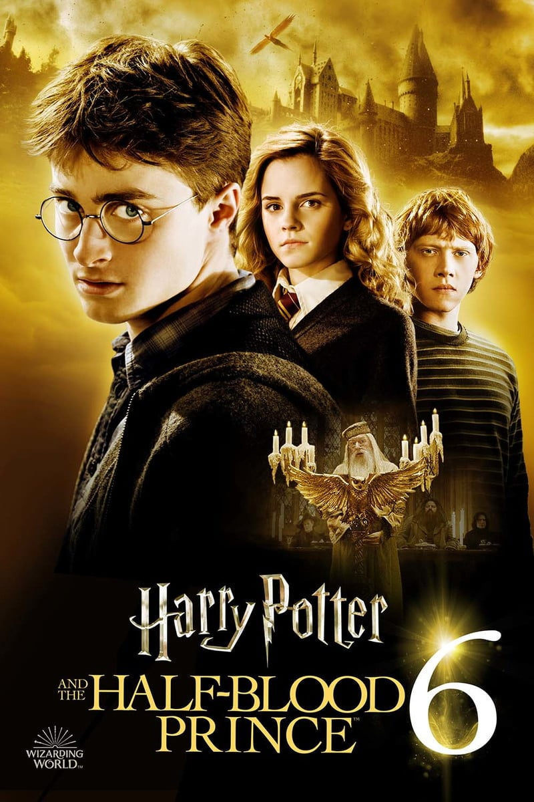
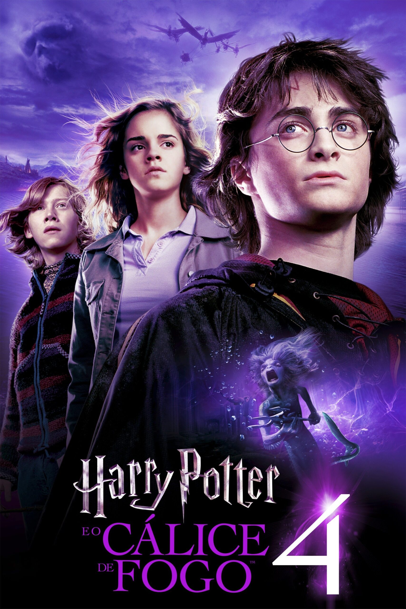
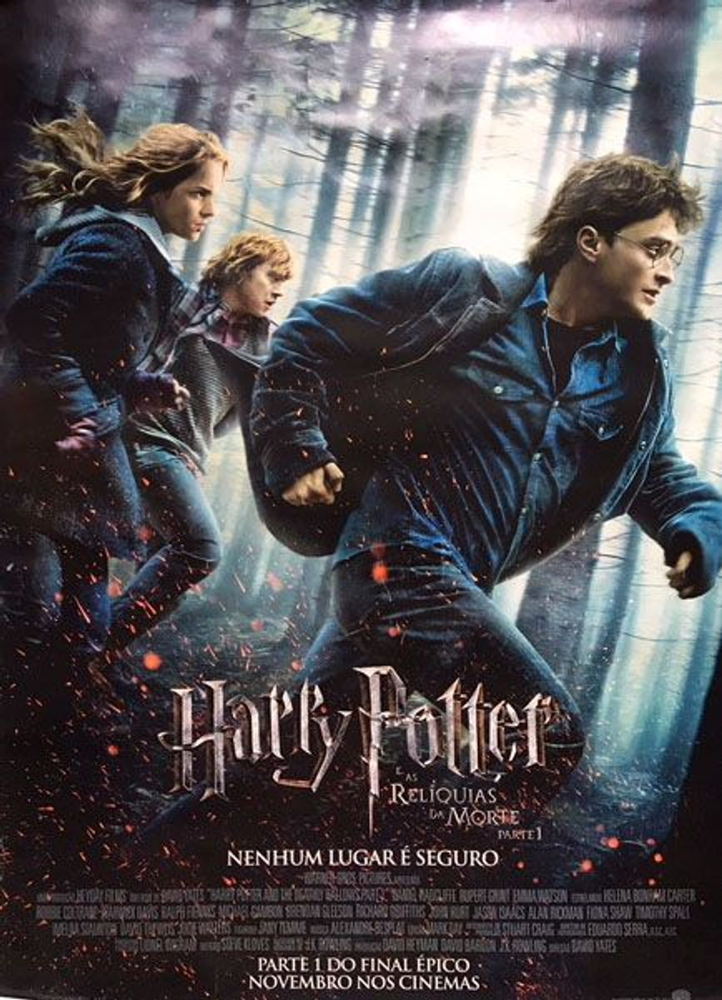
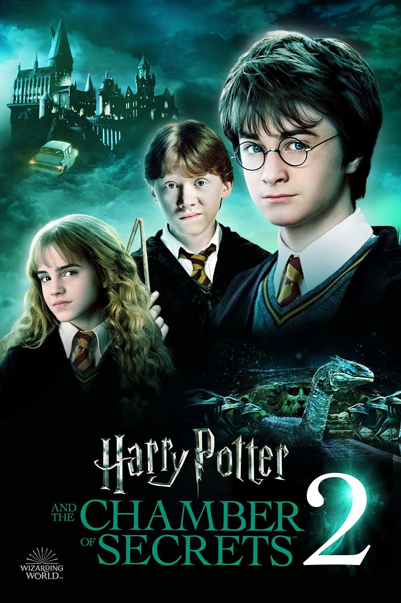
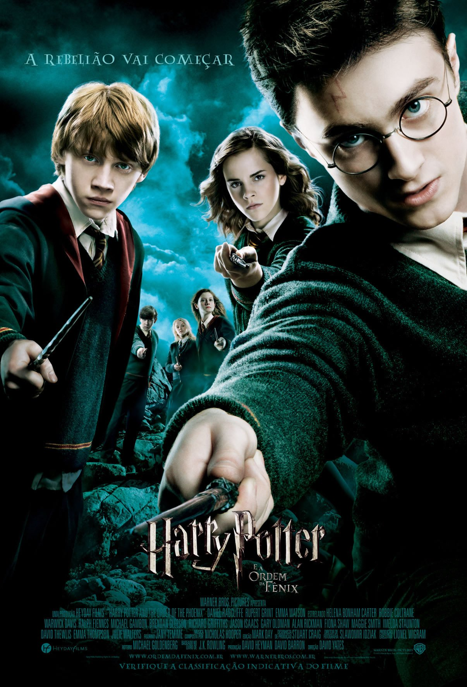
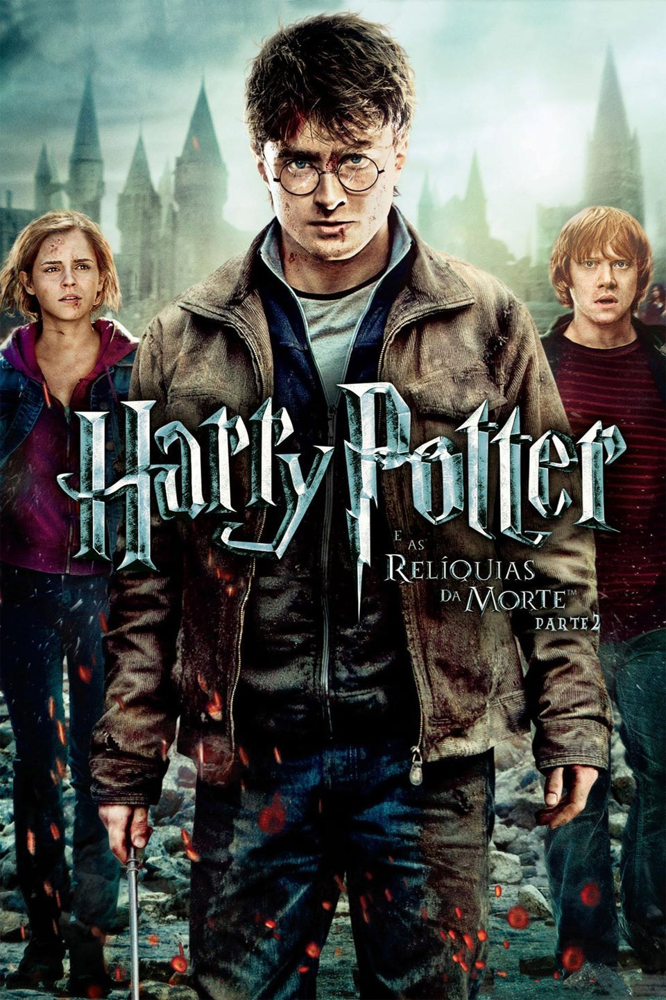
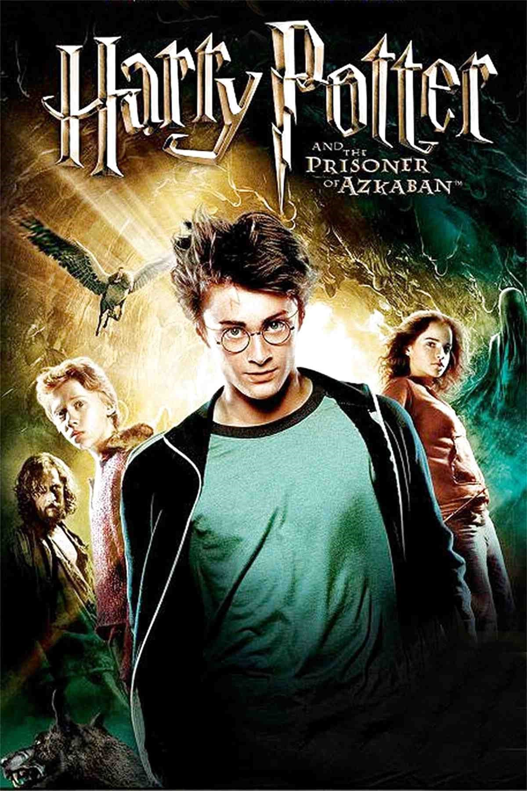
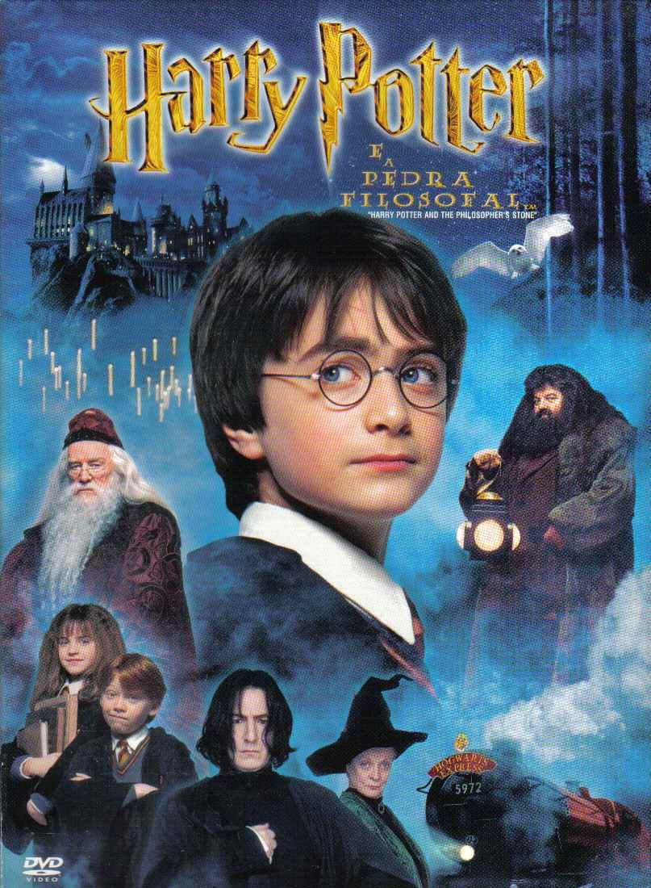

Harry Potter e o Ranking dos Filmes: do pior ao melhor
POR 10/12/2021 6 MINS LEITURA
Quando se fala em Harry Potter, não tem discussão: esta é uma das maiores adaptações literárias deste século e responsável por levar uma legião inteira de fãs para conhecer o mundo bruxo tanto nos livros quanto nas salas de cinema. Relembrar o caminho tomado pelo bruxo é voltar ao tempo e trazer boas memórias para todos que visitaram Hogwarts de algum modo.
Pensando nisso, a plataforma de streaming HBO Max trará um especial no início de janeiro, com grande parte do elenco para recordar de vários momentos dos bastidores e das gravações. Claro que, para preparar vocês ao grande evento, trazemos uma lista com os melhores e piores filmes da franquia. Porém, não entenda errado, todos tem a sua importância dentro da trama: levar o menino a confrontar o pior dos seres sombrios que já pisaram no mundo mágico, Voldemort.
8 – Harry Potter e o Enigma do Príncipe
Este é, facilmente, o mais fraco dos filmes da franquia pelo excesso de informações que surgem durante o longa-metragem para preparar o público aos capítulos finais. Harry Potter aqui tem de desvendar um mistério que descobriu em Hogwarts e que se torna um dos elementos-chave para a derrota de Voldemort.
Como livro ele é muito bem escrito e traz o clima de investigação e de descoberta das memórias do tal “Príncipe Mestiço”. Porém, na adaptação aos cinemas eles cortaram muitas cenas além de ter pouquíssima ação e magia de fato. Ele serve apenas como ponte entre o quinto e os últimos capítulos.
7 – O Cálice de Fogo
O Torneio Tribuxo está prestes a começar e os ânimos estão a flor da pele com o retorno de Voldemort ao poder. Harry se vê inscrito no campeonato sem nem ao menos ter se candidatado e acaba participando das provas contra outras escolas de magia para ganhar o troféu. O que ninguém esperava era que Cedrico Diggory fosse dividir o palco com o jovem protagonista.
Apesar da cena de perseguição com o dragão fosse um dos maiores pontos visuais de toda a franquia, a trama é um tanto arrastada e só parece funcionar como uma ponte do começo, meio e fim. Harry vê a Marca Negra na Copa Mundial de Quadribol, participa das disputas dentro da escola e o fim é uma macabra vitória que o herói carregou. Se você se recordar de algo que fuja muito disso, meus parabéns.
6 – Harry Potter e as Relíquias da Morte Parte 1
Já com um pé no final de toda a trama, Harry, Hermione e Rony fogem de Hogwarts para encontrarem as horcruxes. Com o grande vilão atacando tanto o mundo bruxo quanto os trouxas, nenhum lugar é seguro e os heróis precisam se esconder enquanto viajam atrás dos itens.
Veja bem, a aventura não é ruim, mas perde completamente todos os elementos que tornaram a franquia no que ela foi. Mal vimos a Escola de Magia e Bruxaria, os companheiros do herói, não teve jogo de quadribol nem nada do gênero. Pela divisão do último livro em dois é compreensível, mas das sequências este é o menos interessante no geral. Porém, não menos importante, vamos deixar claro.
5 – A Câmara Secreta
Chegando na metade da nossa lista, Harry Potter e a Câmara Secreta é a sequência que todos os fãs pediram na época e progride de forma excelente o que vimos no primeiro filme. Apesar de ter uma história mais sinistra e abrindo o leque até para mortes de alunos dentro de Hogwarts, não perde nem um pouco o clima bem-humorado e cheio de revelações que as crianças carregam.
Na época de seu lançamento ele foi considerado tão bom quanto o filme que iniciou toda a saga, porém em comparação com os demais ele não parece ter tanto impacto. Isso não torna ele em ruim de forma alguma, porém também não nos causa uma grande mudança de status que vemos nos demais.
4 – Harry Potter e a Ordem da Fênix
Um dos maiores ápices de toda a saga Harry Potter nos cinemas, a Ordem da Fênix mostra os alunos se preparando para confrontar o grande vilão de todas as formas possíveis. Para isso, eles descobrem uma sala secreta que permite que eles treinem suas magias mais poderosas sem os olhares dos adversários e com o tamanho necessário para tais feitos.
Enquanto isso, o mundo político que conta com o Ministério da Magia está em alvoroço pelo retorno de Voldemort e o vilão pretende ir até o lugar para buscar a profecia que afirma como ocorrerá sua grande derrota. Tentando impedir isso de acontecer, Harry e todos os seus amigos partem para o lugar e um grande confronto rola entre os dois lados. Depois disso e de algumas mortes, eles só voltariam a se enfrentar novamente de forma direta no último filme.
3 – As Relíquias da Morte Parte 2
O grand finale coloca Hogwarts como campo de guerra entre alunos e Comensais da Morte, quais buscam destruir um dos maiores patrimônios de esperança do Mundo Mágico. Amarrando todas as pontas enquanto mostra uma batalha brutal dos dois lados, é nele que vemos o quanto tudo foi preparado meticulosamente durante os filmes.
Em sequências belíssimas, um grande ato final e sem medo de matar diversos personagens do elenco, Relíquias da Morte Parte 2 não foi apenas um dos filmes da franquia, mas um grande evento para qualquer fã. Não é à toa que ele é um dos favoritos de uma grande legião de potterheads até hoje.
2 – Harry Potter e o Prisioneiro de Azkaban
Este é, sem sombra de dúvidas, um dos melhores filmes de toda a série Harry Potter. Equilibrando muito bem o mistério, o drama e todos os elementos que tornaram a franquia famosa, O Prisioneiro de Azkaban foi o ponto onde não mostraram ter medo de seguir por caminhos mais arriscados e trazendo um ar mais sombrio.
Na trama, Harry se aprofunda ainda mais na noite do assassinato de seus pais, mostrando qual dos amigos de Lilian e Tiago traiu o casal e o que as consequências daquela noite levou para a vida dos “Marotos”. É neste filme que vimos pela primeira vez os Dementadores, Sirius Black e diversos outros elementos fantásticos que acompanharam as motivações do protagonista até o grande fim.
1 – A Pedra Filosofal
Independente de ser o primeiro e mais antigo filme, é inegável que o primeiro longa-metragem foi o responsável por manter os fãs atentos até a derradeira batalha de Hogwarts. Harry Potter e a Pedra Filosofal nos apresentou vários elementos que nos acompanharam por muitos anos dali em diante e criaram um verdadeiro legado para a saga literária.
É ali que são colocadas todas as peças em jogo, a primeira vez que vimos o grandioso castelo e seus professores, temos um certo vislumbre das ameaças que confrontarão o jovem bruxo e até mesmo certos animais fantásticos. Trocadilhos à parte, é de longe o mais importante e emblemático filme da cultura geek das últimas décadas. Vamos combinar, também não houve concorrência que atingisse o patamar de sua jornada.
Leia mais em Listas!